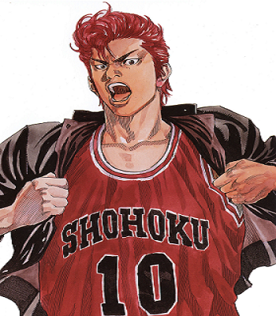
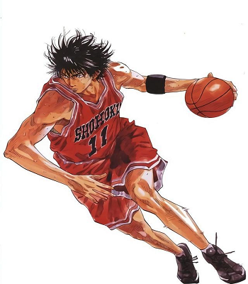
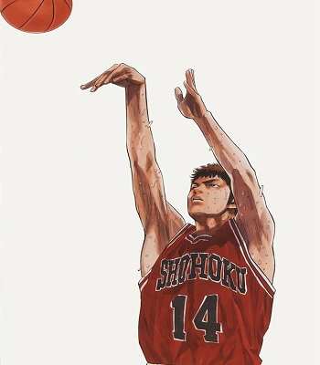
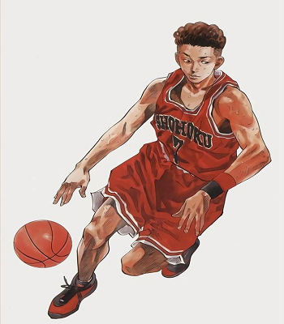

- 
名前：桜木 花道
所属：湘北高等学校1年7組
身長：188cm→189.2cm
体重：83kg
誕生日：4月1日
背番号：10
ポジション：パワーフォワード（PF）
- 
名前：流川 楓
所属：湘北高等学校1年10組
身長：187cm
体重：75kg
背番号：11
ポジション：スモールフォワード（SF）
備考：神奈川新人王
- 
名前：三井 寿
所属：湘北高等学校3年3組
身長：184cm
体重：70kg
誕生日：5月22日
背番号：14
ポジション：シューティングガード（SG）

名前：赤木 剛憲
所属：湘北高等学校3年6組
身長：197cm
体重：93kg
誕生日：5月10日
背番号：4
ポジション：センター(C)
- 
名前：宮城 リョータ
所属：湘北高等学校2年1組
身長：168cm
体重：59kg
誕生日：7月31日
背番号：7
ポジション：ポイントガード(PG)
-
名前：安西 光義
所属：監督
身長：175cm
体重：99kg
名言：
あきらめたら そこで試合終了だよ